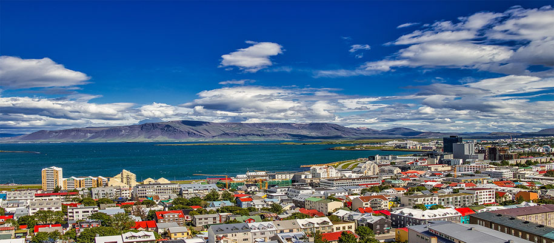

Iceland is a country located in the North Atlantic Ocean. It is a land that consists of vivid contrasts
of climate, geography, and culture. Iceland contains many hot geysers that lie across its ruggedly
beautiful mountain ranges. Britannica claims these geysers provide heat for many of the country’s homes
and buildings and allow for hothouse agriculture year-round. Iceland is also considered a Scandinavian
country, with strong historical, cultural, and linguistic ties. Iceland's homogenous population
continues to rapidly integrate in the European mainstream whilst still preserving their traditions,
customs, and language.

Iceland continues to be the main manufacturing enterprise for export in aluminum production. Other
exports include fish-processing equipment, fishing-gear, and prosthetic devices. According to
Britannica, “There are also small industries that produce computer software, cement, fertilizer, food,
clothing, and books.” Modernizing and standing as one of the world’s oldest democracies allows Iceland
to be more involved in world affairs and trade.
There are a handful of populous cities in Iceland that host festivities annually. Some of these cities
include: Reykjavik, Kopavogur, Hafnarfjordur, Reykjanesbaer - Keflavik, Akureyri, Gardabaer,
Mosfellsbaer, Arborg - Selfoss, Akranes, Fjardabyggd. The capital, Reykjavik, offers many activities for
tourists. To watching the northern lights on a bus cruise, or watching whales in their natural habitat;
Iceland provides memorable experiences for all. Natural locations for enjoying the indigenous
environment in Iceland include: Blue Lagoon, Great Geyser, Lake Myvatn, Asbyrgi, Seljalandsfoss, Glymur,
Gullfoss, Raufarholshellir, Latrabjarg, Hornbjarg. A major natural attraction would be the Blue Lagoon.
It is a geothermal spa that is located in a lava field near Grindavík and in front of Mount Þorbjörn on
Reykjanes Peninsula. The location is favorable for geothermal power, and is supplied by water used in
the nearby Svartsengi geothermal power station. Many of these activities show how Iceland remains to be
an attractive natural inducing country.